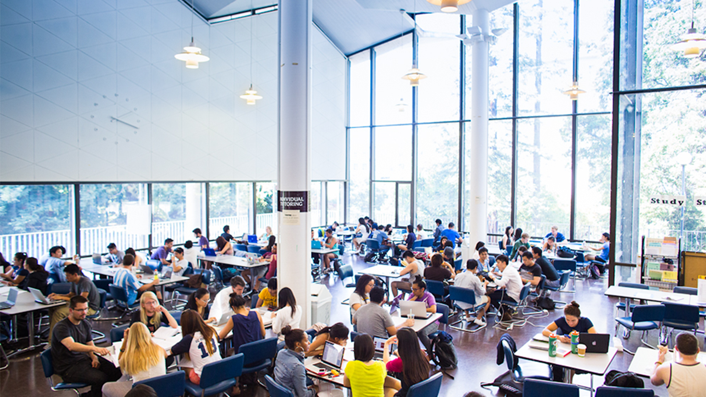
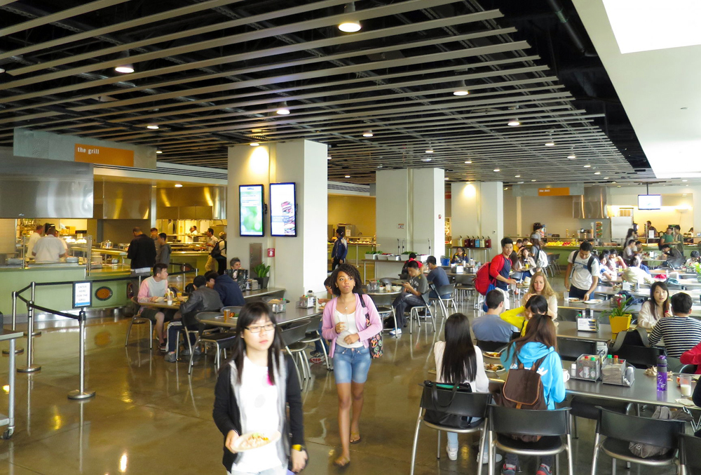
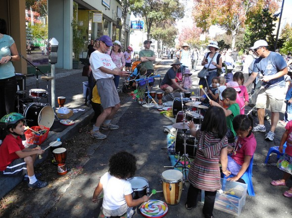

Berkeley Inspirations
Welcome Home
What is Berkeley? Some might say it's a quaint college town, others will quickly dismiss it as an unsavory place rampant with crime, homelessnesss, drugs, and hippies. Whatever it is, Berkeley isn't so easy to quantify with words. Come and create for yourself your own Berkeley experience. And as always, go Bears!

Good Food, Good Company
Try delicious and organic local Berkeley fares
Study in Library
As finals approach, students disappear

Community Events
There's more than weed and hippies going on
Featured Events
Occupy Wheeler
Protests have been rocking the campus since the UC Regents have proposed a 25% tuition hike that would be implemented in the next five years. Check out Wheeler Hall, where students have occupied the location for over a week.
Berkeley Project Day
Each November, 2,000 volunteers come out and volunteer around the Berkeley community, doing projects ranging from painting, gardening, cleaning, and more! Since its inception in 2006, Berkeley Project has saved the city of Berkeley over $1.5 million!
Sunday Streets Berkeley
Bring your friends and family to enjoy a day of fun on Shattuck Ave., which will be blocked off for your entertainment. There will be live music, performances, booths with local vendors, and much more. Walk around, meet your community members, and enjoy this annual event.
Categories
Curricular
UC Berkeley isn't the #1 public university in the world for no reason! This huge research institution always has something interesting going on in, whether it be visiting professors holding seminars and groundbreaking findings being discovered.
Extracurricular
The student community at Cal is diverse as it is proactive. Check out all the different events that student-run organizations have going on everyday when they table on Sproul from eight in the morning to the mid-afternoon.
Berkeley Community
Berkeley has an interesting demographic of people, to say the least. Explore this vibrant town, which is easily accessible by walking or busing. Wherever you go, it's never a dull moment in Berkeley! If you get tired, be sure to stop by one of the local coffee shops.